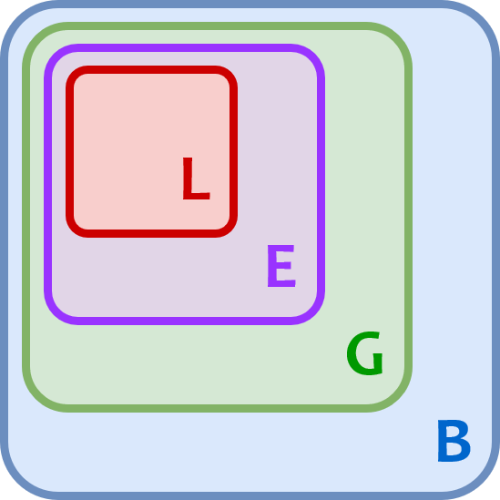

import fiboNB: Modules and Packages
Modules
In Python, a module is a file containing Python code—basically, a collection of expressions and statements.
It will usually contain functions, classes, and fixed variables (“constants”) such as the value of \(\Large\pi\).
For instance, let’s say we have a file called fibo.py with the following code:
## Fibonacci numbers module
def fib(n):
"Prints Fibonacci series up to n."
a, b = 0, 1
while a < n:
print(a, end=' ')
a, b = b, a+b
print()
def fib2(n):
"Returns a Fibonacci series up to n."
a, b = 0, 1
result = []
while a < n:
result.append(a)
a, b = b, a+b
return resultTo use this module, you import it into the script you are working in as follows:
Since fibo.py is sitting in the same directory as our notebook, so we can do this.
ls | grep fibo.pyfibo.pyNow we can use it’s attributes (as they are called) in our code.
fibo.fib(1000)0 1 1 2 3 5 8 13 21 34 55 89 144 233 377 610 987 fibo.fib2(100)[0, 1, 1, 2, 3, 5, 8, 13, 21, 34, 55, 89]Module names
Note that the module’s name we used to import is just the file name without the .py suffix.
So, we say that the file fibo.py contains the module fibo.
__name__
Python provides a special variable called __name__ that you can use to get the name of a module.
For example:
fibo.__name__'fibo'Note that when the module being run is the current file, the name changes to __main__.
Let’s look at the name of this notebook.
__name__'__main__'Packages
A package is just a directory that may contain other modules and packages.
For a directory to become a package, it must should contain an __init__.py file.
As of Python 3.3, this file is optional.
But it is still useful and commonly used.
The __init__.py can be totally empty or it can have some Python code in it.
We’ll see why you would put code in it below.
Here’s an example of a simple package:
a_package_dir/
__init__.py # Can be empty
module_a.py # Contains functions, classes, etc.Here is an example directory structure of a package that contains another package:
a_package_dir/
__init__.py
module_a.py
a_sub_package_dir/ # A subdirectory
__init__.py
module_b.pyImporting from modules from packages
Given the above directory and file structures, within a Python file you can import the package a_package like this:
import a_packageThis will run any code in a_package/__init__.py.
Any variable or function names defined in the __init__.py will be available like this:
a_package.a_nameHowever, no modules will be imported unless explicity commanded to.
So, in the following,
a_package.module_amodule_a will not be imported.
To access module_a, you need to explicitly import it:
import a_package.module_aExamples
Let’s look at an example with actual files.
We import a package …
import demo_package1But cannot access the module.
demo_package1.module1AttributeError: module 'demo_package1' has no attribute 'module1'To access it, we have to specify it in the import path:
import demo_package1.module1demo_package1.module1<module 'demo_package1.module1' from '/Users/rca2t1/Dropbox/Courses/DS/DS5100/repo-book/notebooks/M09_PythonModules/demo_package1/module1.py'>Now we have it in memory and can access its attributes.
demo_package1.module1.welcome1()Hi, I'm from Demo 1!from
We can use the from statement to provide a context for our imports.
This allows use to directly import the module into our code.
from demo_package1 import module1module1.welcome1()Hi, I'm from Demo 1!from demo_package1.module1 import welcome1welcome1()Hi, I'm from Demo 1!Preloading Modules and Functions
Rembmer that you can put any code you want in a __init__.py file.
It’s as if the package directory is a module, and the contents the init file is the content of the module.
A common use case for putting code into the package initialization file is to preload modules when importing the package.
This can be useful if you want to make certain modules available to all other modules in your project.
You can also use it to import files to be shared by modules in your own project for convenience.
For example, let’s say you have the following package set up:
funny/
__init__.py
funniest.py # contains the function joke()If you wanted to import the module funniest and have access to the function joke(), you’d have to do this:
import funny.funniestAnd then to use the function, do this:
funny.funniest.joke()You can’t do this:
import funny
funny.funniest.joke()You could also do this:
from funny import funniest
funniest.joke()Or even this:
from funny.funniest import joke
joke()Note, you can’t do this:
from funny import funniest.jokeNotice the grammar here.
The from command provides a context, and the import command specifies the variable name for the resource.
In each case, what follows import is the name of the resource you will use to access it.
Now, you can by-pass having to import the module doing this in the init file.
Basically, you can put the same import line into the init file, and it’s as if you did it in your program.
Here are some scenarios.
In the init file:
import funny.funniestThen in the program:
import funny
funny.funniest.joke()Or, in the init file:
from funny import funniestThen in the program:
import funny
funny.funniest.joke()Or, you can put this in the initialization file:
from funny.funniest import jokeThen in the program, you can do this:
import funny
funny.joke()Or this:
from funny import joke
joke()See how it simplifies the import statement?
Let’s looks at some examples with real files.
Example 1: Empty __init__.py
Let’s import a module, this time using an alias.
import demo_package1.module1 as d1md1m.welcome1()Hi, I'm from Demo 1!Here we use a from statement to provide context.
from demo_package1.module1 import welcome1welcome1()Hi, I'm from Demo 1!Example 2: Edited __init__.py
Now, we can allow the users to import a module function directly from a package by simply adding the following to our package initializer:
from package.module import func # or classFor example, our Demo2 __init__().py contains:
from demo_package2.module2 import welcome2This allows us to do this in our calling script:
import demo_package2 as d2d2.welcome2()Hi, I'm from Demo 2!Or this:
from demo_package2 import welcome2welcome2()Hi, I'm from Demo 2!It turns out, this is a common practice.
Relative vs Absolute Paths
You will sometimes see a dot . used in the import statements found in init files.
It is used in the context a from statement. For example:
from . import funniestor
from .funniest import jokeThe dot is used to shift from absolute to relative path.
In other words, when you import modules in an __init__.py file within a package, the dot (.) refers to the current package or module’s namespace.
For example, consider a package structure like this:
mypackage/
__init__.py
module1.py
module2.pyInside the __init__.py file, if you import module1 using a relative import with a dot (.), it would look like this:
from . import module1This means that module1 is being imported from the current package (mypackage in this case).
Similarly, if you wanted to import module2 from module1, you could do it like this:
from . import module2This would import module2 from the same package as the __init__.py file.
Using dot notation for imports in __init__.py is a way to make relative imports within the package, making the code more readable and maintainable.
Namespaces
You can see that a python module acts as a single namespace, which is used to organize a collection of values:
- functions
- constants
- class definitions
- really any old value
A namespace is a collection of currently defined names being used by a program.
You can think of it as something like a Python dictionary in which the keys are the object names
and the values are the objects themselves.
It’s a way of making sure variable and function names do not collide or get confused with each other.
Python has four namespaces:
Built-In: Contains the names of all of Python’s built-in objects. See
dir(__builtins__)Global: Contains any names defined at the level of the main program.
A global namespace is also created for any module that your program imports. See
globals().
Enclosing: The namespaces of a function for any functions defined within that function.
Local: Contains any names defined in a function.
Namespaces are related to scope.
To know the context in which a name has meaning, Python searches namespaces from the inside out.
L -> E -> G -> B
See M09-01a-Globals.ipynb for a demo.
See Namespaces and Scope in Python (Real Python) for a good primer.
Here is a demonstration of namespaces:
def foo():
x = y = z = 1
print(locals())
def bar():
a = b = c = 2
print(locals())
bar()foo(){'x': 1, 'y': 1, 'z': 1}
{'a': 2, 'b': 2, 'c': 2}What happens if we print globals()?
How Python finds things
How does Python know where to find modules?
The interpreter keeps a list of all the places that it looks for modules or packages when you do an import. It is stored in the sys module.
import sys
for p in sys.path:
print pYou can edit that list to add or remove paths to let python find modules on a new place.
sys.path.append(some_local_dir)Remember that every module has a __file__ name that points to the path it lives in.
This lets you add paths relative to where you are, etc.
sys.path.append(f"{__file__}/local_module_directory")To install a package, you need a setup file. This allows you to build a package.
More Info
There is, of course, a lot more to this topic than what’s covered here.
We’ve covered what you need to know to get started.
See the official docs on modules for more depth.
Discuss the idea of a project directory. The project directory contains the package directories and modules, as well as the setup file and other auxiliary files.